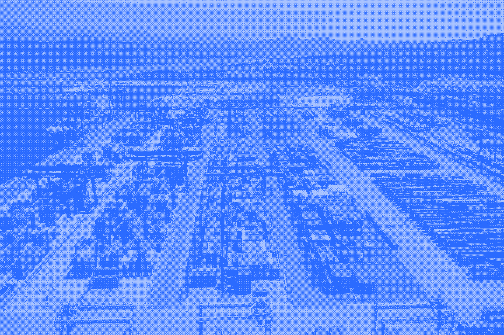

Collecte et lancement
01Kick-off, lignes, navires, escales, données techniques.
Lignes maritimes · MBFC

La biodiversité,
un nouvel avantage concurrentiel.
Calculez l’impact de vos lignes sur la biodiversité marine. Agissez sur un navire pilote. Comparez-vous à vos concurrents. Communiquez.
Vos chargeurs vous demandent déjà vos chiffres CO₂ dans leurs appels d’offres. Les plus avancés vous demandent la biodiversité. Développez un nouvel avantage concurrentiel.
Quatre livrables : matrice d’impacts sur vos 3 lignes, plan d’actions biodiversité marine sur 1 navire pilote, benchmark face à 9 concurrents, kit de reporting et communication pour vos appels d’offres, clients et partenaires.
Testé et approuvé par un leader du luxe, efficace (quick-wins, gains multiples, 4 h de votre temps), méthode fiable et auditable, offre unique sur la biodiversité marine.
Périmètre pilote : matrice sur vos 3 principales lignes, plan d’actions sur 1 navire, benchmark face à 9 concurrents. Au-delà : sur devis.
Le CO₂
La biodiversité
L’avantage
Notre client chargeur de référence a déjà intégré 10 critères biodiversité à ses appels d’offres fret.
Eaux de ballast, bruit sous-marin, collisions avec les cétacés, rejets des épurateurs de fumées. Vos chiffres CO₂ ne répondent qu’à 18 % de la question.
Étude MBFC de référence, maison de luxe française, 2025 : 22 pressions évaluées, dont 17,7 % liées au climat.
Vos navires sont un atout pour le climat. Mais ils déplacent aussi des espèces invasives, font du bruit sous-marin, croisent des cétacés et rejettent les eaux de lavage de leurs épurateurs de fumées.
Une même action, trois gains : biodiversité, carbone, pollutions.
Répartition des 22 pressions, étude MBFC de référence (2025). Score d’impact relatif.
Tous azimuts : les mêmes actions réduisent aussi votre carbone et vos pollutions.
Matrice d’impacts
Plan d’actions
Benchmark concurrentiel
Kit de reporting et communication
Actualisation annuelle : suivez vos progrès face à vos concurrents.
Formation de vos équipes commerciales, techniques et RSE : 400 € HT la demi-journée.
Livré sur l’interface en ligne et en PDF. Chaque livrable téléchargeable en un clic, prêt à être utilisé.
| Impact | Actions | Impact vs coût |
|---|---|---|
| Eaux de ballast | Registre et traitement à la norme de performance (convention BWM) | Facile, peu coûteux |
| Continuités écologiques | Zones sensibles et corridors intégrés aux trajectoires | Facile, peu coûteux |
| Bio-encrassement | Nettoyage régulier des coques, antifouling conforme AFS | Coût modéré |
| Introduction d’énergies | Slow steaming, hélices optimisées, branchement électrique à quai | Coût modéré |
| Rejets de NOx | Slow steaming, réduction catalytique sélective (jusqu’à quatre-vingt-dix pour cent de moins) | Coût modéré |
| Collisions avec la faune | Slow steaming, évitement des routes migratoires, alerte REPCET | Coût modéré |
| SOx des scrubbers ouverts | Scrubbers en circuit fermé, carburants alternatifs | Coût modéré |
| CO₂ et acidification | Électro-carburants, assistance vélique, propulsion optimisée | Complexe, coûteux |
Commencez par les quick-wins : jusqu’à −70 % d’impact, sans surcoût considérable.
Estimation issue de l’étude MBFC de référence (2025), actions classées par ratio impact vs coût.
Première semaine : collecte et lancement, cartographie. Deuxième semaine : 22 pressions, plan d’actions. Troisième semaine : benchmark. Quatrième semaine : restitution et kit.
Kick-off, lignes, navires, escales, données techniques.
Corridors, hotspots, espèces menacées sur vos lignes.
Matrice d’impacts sur 3 lignes.
Sur 1 navire pilote, en coût-bénéfice.
Face à 9 concurrents sur vos lignes.
Résultats, feuille de route, kit de reporting et com.
Votre temps : 4 heures, sans perturber vos opérations
Remote ou sur site, en français ou en anglais
La méthode qu’utilisent les chargeurs pour noter leurs armateurs. Chaque chiffre est sourcé et auditable.
Étude MBFC, 2025. Ordres de grandeur sur un score d’impact relatif.
Les armateurs qui y répondent les premiers prennent l’avantage.
Votre retour sur investissement : un nouvel avantage dans vos appels d’offres.
12 000 € HT, prix complet
Périmètre pilote : matrice sur 3 lignes, plan d’actions sur 1 navire, benchmark face à 9 concurrents. Au-delà : sur devis.
laboratory at eco.systema est une bluetech fondée par deux entrepreneurs : l’un spécialiste du fret maritime et des sciences de l’environnement, l’autre en développement informatique et analyse de données.
CEO, Eco.Systema
CTO, Eco.Systema
L’océan couvre 71 % de la planète et porte l’essentiel du commerce mondial. Mais il reste l’angle mort des stratégies environnementales. Nous le rendons mesurable pour que vos efforts deviennent un argument commercial, et vos navires le choix évident de vos chargeurs.
Diagnostic live en 30 minutes sur l’une de vos lignes. On en discute ?
Choisir un créneau avec Mathieu[LIEN AGENDA]